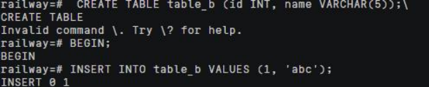
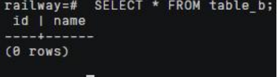
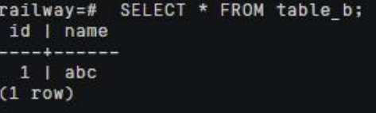

本次实验由于华为云服务器欠费，没有使用openGauss数据库，而借用同学的服务器完成实验
一、实验介绍
日志与恢复是 openGauss 数据库实现事务处理和确保 ACID 特性的重要组成部分。本实验尝试打通目前数据库日志与恢复模块在原理学习与系统实现上的鸿沟。通过 openGauss数据库中日志与恢复部分的实现源代码，分析与验证相关原理与机制，包括：WAL 日志文件、XLOG 日志记录、日志写入过程、检查点机制、数据库恢复、数据库备份与 PITR 恢复。
首先，通过实验查看 WAL 日志文件的基本信息与命名方式；然后，通过“立即”关闭模式验证数据库在重启时的恢复过程；通过添加代码的方法，在数据库恢复过程中输出调试信息，结合源代码阅读，更加详细地分析 WAL 日志恢复过程；最后，验证数据库备份与 PITR恢复机制。
日志与恢复机制是数据库系统最为繁杂的功能模块之一，数据库日志与恢复功能的实现需要考虑众多原理中忽略的细节，大量涉及较为底层的系统机制。本实验的实践内容包括较多的源代码阅读与分析，具有较大的挑战性。
二、实验目的
理解 WAL 日志文件的工作原理。
理解 XLOG 日志记录的组织。
理解 WAL 日志写入过程。
理解 WAL 日志检查点机制。
理解利用 WAL 日志重做 XLOG 记录进行数据库恢复的原理。
掌握数据库备份与 PITR 恢复方法。
了解与本实验相关的函数与结构体的源代码。
三、实验步骤和结果
（一）查看WAL日志文件
1.查看默认日志大小
1 | SHOW wal_segment_size; |
2.查看当前日志的 LSN
1 | SELECT pg_current_xlog_insert_location(); |
3.查看当前日志文件名
1 | SELECT pg_xlogfile_name('0/1497E7B0'); |
4.查看当前日志文件名和 LSN 在 WAL 段文件中的字节偏移量
1 | SELECT pg_xlogfile_name_offset('0/1497E7B0'); |
5.查看 openGauss 的 WAL 日志文件目录
1 | ll $GAUSSHOME/data/pg_xlog |
（二）验证数据库恢复
1.通过 immediate 关闭模式触发数据库恢复
新建一个 SSH 会话，用 gsql 客户端连接数据库服务器。执行下面语句：
用 fast 模式关闭数据库服务器：
1 | gs_ctl stop -D $GAUSSHOME/data -m fast |

查看 gaussdb 进程输出日志文件（位于$GAUSSHOME/data/pg_log 目录），其中
部分日志行如下：
1 | LOG: received fast shutdown request |
重启数据库服务器：
1 | gs_ctl start -D $GAUSSHOME/data -Z single_node -l logfile |
查看表数据，发现未提交的事务被回滚，INSERT 语句插入的数据没有出现在表中。
下面通过实验观察 immediate 关闭模式。
新建一个 SSH 会话，用 gsql 客户端连接数据库服务器。执行下面语句：
1 | INSERT INTO table_b VALUES (1, 'abc'); |
用 immediate 模式关闭数据库服务器：
1 | gs_ctl stop -D $GAUSSHOME/data -m immediate |
查看 gaussdb 进程的输出日志文件（位于$GAUSSHOME/data/pg_log 目录），其
中部分日志行如下：
1 | LOG: received immediate shutdown request |
重启数据库服务器：
1 | gs_ctl start -D $GAUSSHOME/data -Z single_node -l logfile |
查看 gaussdb 进程输出日志文件（位于$GAUSSHOME/data/pg_log 目录），其中部分日志行如下：
1 | LOG: database system was not properly shut down; automatic recovery in progress |
查看表数据，发现 INSERT 语句插入的数据在表中，表明数据库已恢复到正常状态。
（二）查看 pg_control 文件
pg_control 文件位于在数据目录的 global 子目录中。
1 | cd $GAUSSHOME/data/single_node/global/ |
1 | pg_controldata /home/omm/opengauss/data/single_node/ |
四、实验讨论与总结
日志与恢复是数据库管理系统中至关重要的部分，确保了事务处理的完整性和数据库的ACID特性。在本实验中，通过openGauss数据库中的日志与恢复机制，我们深入理解了WAL日志文件的工作原理、XLOG日志记录的组织及其写入过程、日志检查点机制，以及利用WAL日志进行数据库恢复的原理。此外，我们还掌握了数据库备份与PITR恢复的方法。本实验结合源代码阅读和分析，帮助我们在理论与实践之间架起桥梁，深化了对数据库日志与恢复机制复杂实现的理解。这些知识和技能对于保障数据库在系统故障情况下的稳定性和数据完整性具有重要意义。